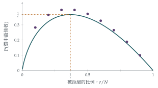

STEP I 2001，第 14 題
繼續之前，請先閱讀題目（原題為英文）。題目載於 STEP Support Programme 的題目資料庫： step.maths.org/questions/01-s1-q14
引子
你正在逐一面試應徵者，而且必須即場決定：取錄眼前這一位，然後停止；還是永遠拒絕這一位，再見下一位。你想要的是最好的那一位。如果太早取錄，你很可能錯過更好的人；如果等得太久，最好的那一位很可能已經走了。你應該怎樣做？
答案是概率（probability）論中最著名的結果之一：先拒絕最初 \(37\%\) 的應徵者，然後取錄第一位比這些人都好的應徵者。這個做法大約有 \(37\%\) 的機會成功，而 \(37\%\) 正是 \(\frac1e\)。本題計算其中的基本概率，而與它配對的 STEP II 2006 題目（見練習）則分析這個策略（strategy）最簡單的版本：只拒絕第一位應徵者。
動筆之前
在隨機次序之下，全體之中最好的應徵者落在最先面試的 \(n\) 位之中的概率是多少？
最好的應徵者落在 \(N\) 個位置中任何一個的可能性均等，所以概率是 \(\frac nN\)。
逐步解題
階段 1 最先 \(n\) 位中的最佳者就是全體最佳者
最先 \(n\) 位中的最佳者是全體最佳者，當且僅當全體最佳者在最先 \(n\) 位之中：概率為 \(\frac nN\)。■
階段 2 最佳或次佳
最先 \(n\) 位中的最佳者是全體次佳者，當且僅當次佳者在最先 \(n\) 位之中而最佳者不在其中。這個概率是多少？
次佳者在最先 \(n\) 位之中的概率是 \(\frac nN\)；在此條件下，最佳者在其餘 \(N - 1\) 個位置的其中一個，當中有 \(N - n\) 個位置排在最先 \(n\) 位之後。所以 \[\mathrm{P}(\text{最佳或次佳}) = \frac nN + \frac nN\cdot\frac{N - n}{N - 1}. \qed\] 當 \(N = 4\)，\(n = 2\) 時：\(\frac12 + \frac12\cdot\frac23 = \frac56\)。把最好的兩位應徵者在四個位置中的排法逐一列出（全部 \(12\) 種有序排法的可能性均等），除了兩位頂尖應徵者同時落在第 \(3\) 和第 \(4\) 位的 \(2\) 種排法之外，最先兩位中的最佳者都是頂尖兩位之一：\(\frac{10}{12} = \frac56\)。
階段 3 最優策略
策略：先拒絕最初 \(r\) 位應徵者，然後取錄第一位比他們全部都好的應徵者。如果最佳應徵者在位置 \(k > r\)，這個策略在甚麼情況下會選中此人？
設最佳應徵者在位置 \(k\)，這個策略選中此人，當且僅當位置 \(r + 1, \ldots, k - 1\) 上沒有任何應徵者勝過最初 \(r\) 位全部的人，即是說，最先 \(k - 1\) 位應徵者中的最佳者在最初 \(r\) 位之中。根據第 1 階段（把 \(N\) 換成 \(k - 1\)），這件事的概率是 \(\frac{r}{k - 1}\)。最佳應徵者落在每個位置 \(k\) 的概率都是 \(\frac1N\)，所以 \[\mathrm{P}(\text{成功}) = \frac1N\sum_{k=r+1}^{N}\frac{r}{k - 1} = \frac rN\Bigl(\frac1r + \frac{1}{r + 1} + \cdots + \frac{1}{N - 1}\Bigr).\]
當 \(N\) 很大時，記 \(x = \frac rN\)。這個和大約等於 \(\ln\frac{N}{r}\)。\(x\) 取甚麼值時 \(x\ln\frac1x\) 達到最大？
成功的概率大約是 \(x\ln\frac1x\)。求導可得，\(\ln\frac1x - 1 = 0\) 於 \(x = \frac1e\) 時成立，而最大值是 \(\frac1e \approx 0.368\)（圖 12.12.1）。

回顧
位置的對稱性。在隨機次序之下，每位應徵者落在任何位置的可能性均等，由此立即得出 \(\frac nN\)。
以最佳者的位置為條件。計算策略的成功概率時，我們以最佳應徵者所在的位置為條件分情況處理。
求和變成積分。當 \(N\) 很大時，調和和（harmonic sum）變成了對數，再經一次求最大值便得出 \(\frac1e\)。
背後的數學
最優停止
祕書問題（secretary problem）是最優停止（optimal stopping）的奠基例子：根據隨時間陸續到來的資訊，決定何時採取行動，以使期望回報最大。可以證明，在所有策略之中（而不只是「先拒絕 \(r\) 位，然後取錄下一位至今最佳者」這一類），這種閾值規則（threshold rule）是最優的，論證的方法是由最後一位應徵者開始向前逆推。同樣的數學也決定了何時賣出股票、何時行使金融期權，以及應該花多久去找泊車位。一個值得注意的特點是，在極限之下答案與 \(N\) 無關：不論應徵者有一百位還是一百萬位，你成功的概率都是 \(\frac1e\)。
各種變化
如果你只要選中頂尖兩位應徵者的其中一位便滿意，最佳策略大約有 \(57\%\) 的機會成功。如果你想做到的不是使選中最佳者的機會最大，而是使所選應徵者的期望名次最優，最優策略便複雜得多，而期望名次趨向大約 \(3.87\)（Chow、Moriguti、Robbins 和 Samuels，1964）。如果你有一定的概率可以回頭召回已被拒絕的應徵者，又或者你知道應徵者分數的分佈（即「完全資訊」問題），答案又會不同。練習中的雪糕題是最簡單的情形：只拒絕一個，然後取下一個比它好的。
這個問題在 1950 年代流傳於數學家之間，馬丁·加德納（Martin Gardner）於 1960 年以「googol 遊戲」之名把它普及開來（在紙條上寫下數字；你的對手逐張翻開，並且必須在最大的那個數出現時停下）。Thomas Ferguson 的文章「Who solved the secretary problem?」（1989）追溯了它錯綜複雜的歷史；有一種說法指，天文學家開普勒（Johannes Kepler）在 1611 年挑選第二任妻子時，會見了十一位人選，最後向第五位求婚。
思維技巧
當最佳策略未知時，考慮一族帶有參數的自然策略，把成功概率寫成該參數的函數，然後求最優。
在大學裏，這種方法用於決策論、博弈論和統計學。要證明這一族之中的最佳策略就是全體之中的最佳策略，是更困難也更有趣的一步，通常要用逆向歸納法（backward induction）來完成。
延伸練習
雪糕。試做 STEP II 2006，第 13 題：這是祕書問題的小型版本，規則很簡單。拒絕第一個，然後取第一個勝過它的。
較小的 \(N\)。當 \(N = 4\) 時，求 \(r\) 的最佳值和成功的概率。用列舉法驗算。
最佳或次佳。利用第 (ii) 部分，論證「最先 \(n\) 位中的最佳者是頂尖兩位之一」的可能性遠高於「最先 \(n\) 位中的最佳者就是最佳者」。這對於選中頂尖兩位之一的策略有甚麼啟示？
精確的最大值。當 \(N = 10\) 時，從圖中驗證 \(r = 3\) 是最優的。當 \(N = 100\) 時，證明 \(r = 37\) 是最優的（準確至四位小數，\(r = 36\)、\(37\)、\(38\) 的成功概率分別是 \(0.3710\)、\(0.3710\)、\(0.3708\)）。
延伸閱讀
Thomas Ferguson，「Who solved the secretary problem?」，Statistical Science 4（1989）。歷史與各種變化；可在網上免費閱讀。
Brian Christian & Tom Griffiths，Algorithms to Live By（William Collins）。把最優停止及其他算法應用於日常決策。
Martin Gardner，New Mathematical Diversions（Mathematical Association of America）。googol 遊戲。